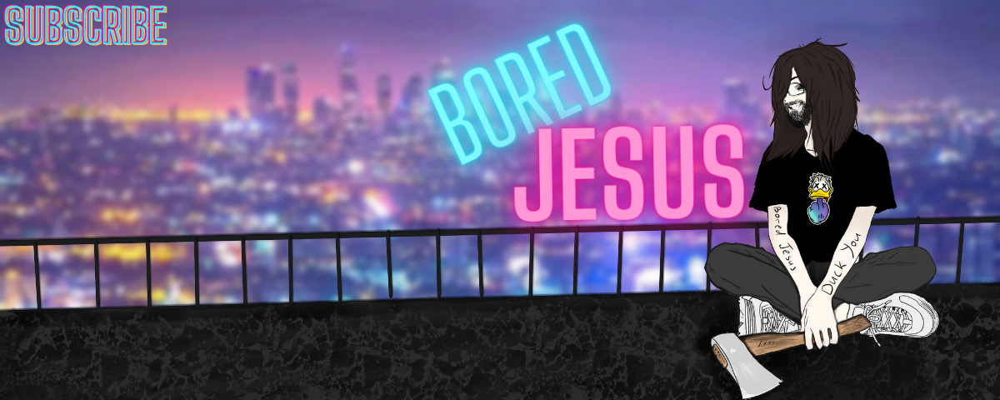

My name is Vladislav, however many may know me as Jesus. Why is that? Briefly, at one time in my life (as I grew my hair long) I began to resemble the well-known Messiah. I was working in a deplorably famous institution "KOROVA" in Kharkov. That's how this pseudonym became attached to me. You can find sample photos in the gallery.